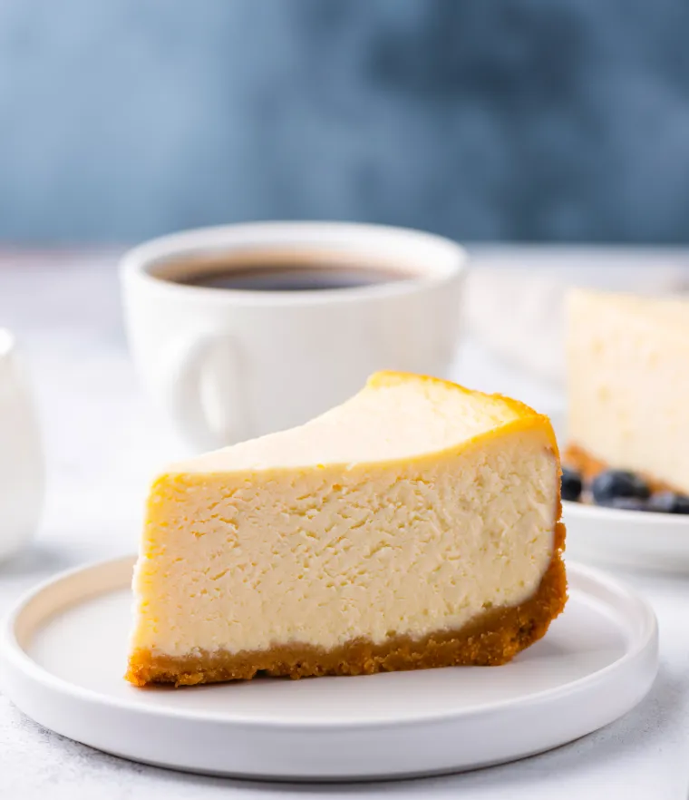

Cheese Cake
Cheese Cake is a dessert that is made from cream cheese, eggs, and sugar. I
It is baked in a water bath and then chilled. It is a very popular dessert in the United States.

Ingredients
Directions
- Mix the cheese, eggs, sugar, and cream together.
- Put the mixture in a water bath and bake for 30 minutes.
- Chill the cake for 2 hours.
- Serve cold.